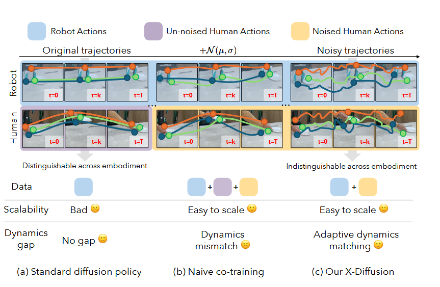
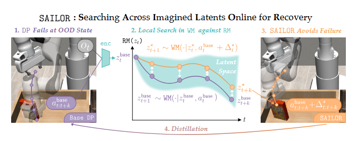
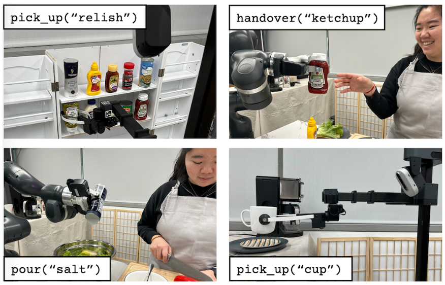
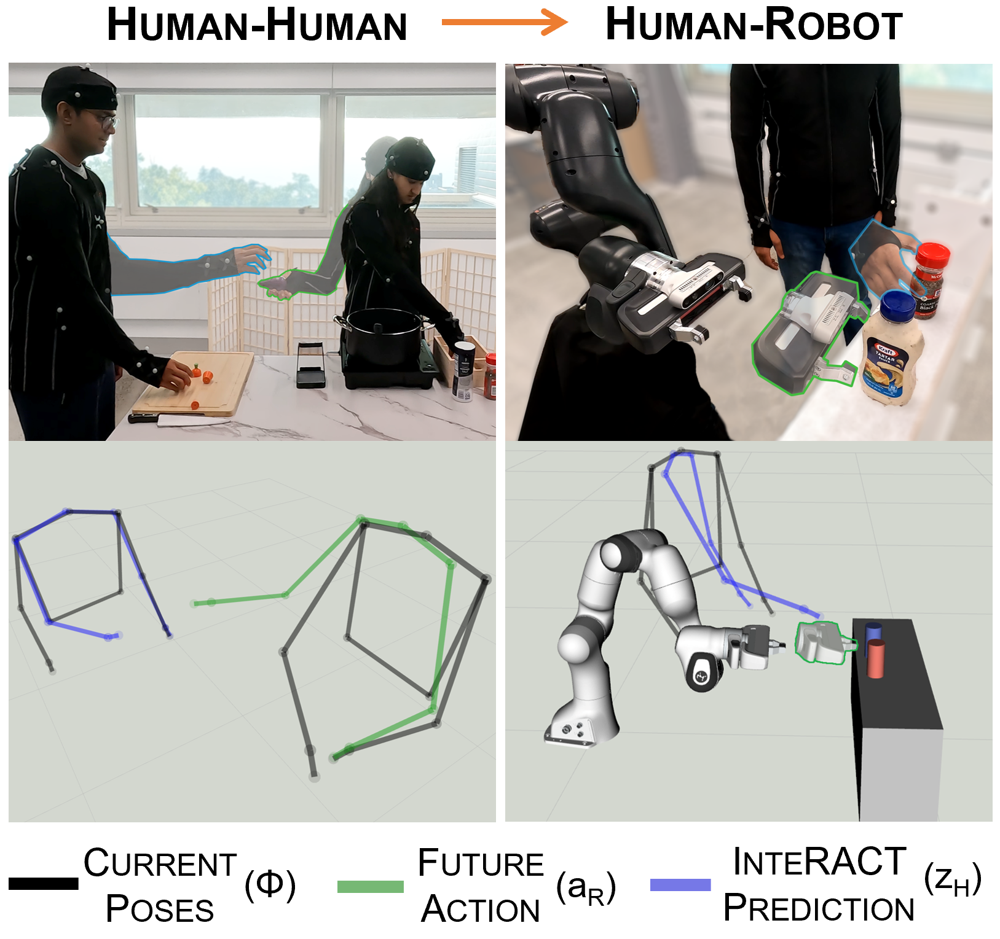
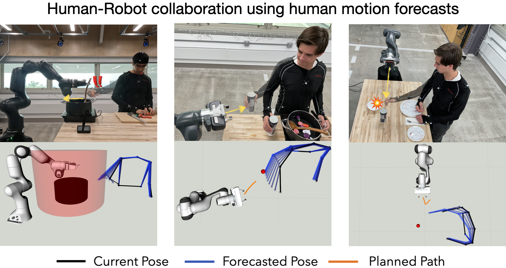
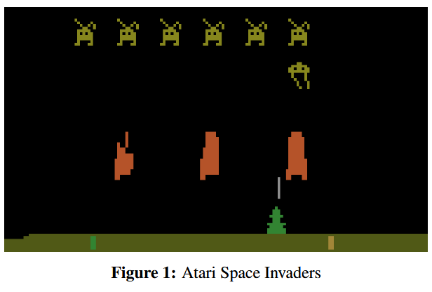

Hi, I'm Atiksh and recently graduated from Cornell University with a Bachelor's degree in Computer Science. At Cornell, I'm part of the Praxis research group advised by Prof. Preston Culbertson. Formerly, I was part of the
PoRTaL research group advised by Prof. Sanjiban Choudhury.I enjoy finding new methods of teaching robots and working robotics systems and am interested in Imitation Learning, Reinforcement Learning, and Human-Robot Interaction.
Research Assistant @ PRAXIS
TA for Machine Learning (CS 3/5780) and Research Intern @ PoRTaL
Software Engineering Intern @ Texas Instruments
TA for Reinforcement Learning (CS 4/5789) and Research Intern @ PoRTaL
TA for Robot Learning (CS 4/5756) and Research Intern @ PoRTaL
Research Intern @ PoRTaL
TA for Artificial Intelligence (CS 4700) and Research Intern @ PoRTaL
Consultant for Functional Programming (CS 3110) and Research Intern @ PoRTaL
Research Intern @ PoRTaL
Robotics Intern @ Brains4Drones
NFTTree wins PI Network Track at Big Red Hackathon
MathWorks Blog: Sibling Duo Share How Participating in Student Competitions Drives Interest in STEM Careers

Maximus A. Pace*, Prithwish Dan*, Chuanruo Ning, Atiksh Bhardwaj, Audrey Du, Edward W. Duan, Wei-Chiu Ma†, Kushal Kedia†
IEEE International Conference on Robotics and Automation (ICRA), 2026

Arnav Kumar Jain*, Vibhakar Motha*, Subin Kim, Atiksh Bhardwaj, Juntao Ren, Yunhai Feng, Sanjiban Choudhury, Gokul Swamy
39th Annual Conference on Neural Information Processing Systems (NeurIPS), 2025
Selected as Spotlight Paper (Top 3%, 688 selected out of 21544 submissions)

Huaxiaoyue Wang*, Kushal Kedia*, Juntao Ren*, Rahma Abdullah, Atiksh Bhardwaj, Angela Chao, Kelly Y Chen, Nathaniel Chin, Prithwish Dan, Xinyi Fan, Gonzalo Gonzalez-Pumariega, Aditya Kompella, Maximus Adrian Pace, Yash Sharma, Xiangwan Sun, Neha Sunkara, and Sanjiban Choudhury
8th Annual Conference on Robot Learning (CoRL), 2024
Awards: Best Paper Award at the ICRA 2024 VLNMN Workshop and Best Poster Award at the ICRA 2024 MoMa Workshop

Kushal Kedia, Atiksh Bhardwaj, Prithwish Dan, Sanjiban Choudhury, ICRA, 2024
IEEE International Conference on Robotics and Automation (ICRA), 2024

Kushal Kedia, Prithwish Dan, Atiksh Bhardwaj, Sanjiban Choudhury, CoRL, 2023
7th Annual Conference on Robot Learning (CoRL), 2023

Atiksh Bhardwaj, Jonathen Chen
Q-Networks represent an off-policy reinforcement learning approach centered on estimating value functions from environments. As an off-policy method, it relies on an external dataset for learning and computing Q-values. This dependency on provided data can yield diverse outcomes, either enhancing or hindering the Q-Network's performance. To delve into this dynamic, we embarked on an investigation utilizing conventional imitation learning techniques like Behavior Cloning and DAgger to generate data for training Q-Networks.